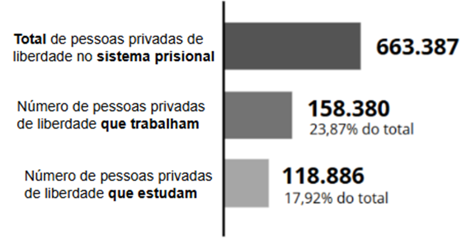
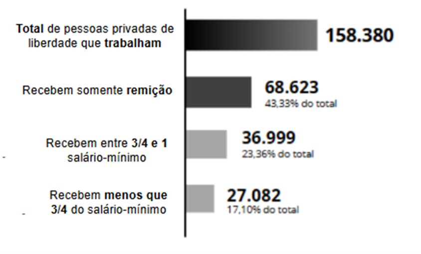

Apresentação da Unidade
Olá, estudante-trabalhador! Seja bem-vindo!
A reintegração social das pessoas privadas de liberdade (PPL) é um tema fundamental para a construção de uma sociedade mais justa e inclusiva. Nesta Unidade, vamos explorar a importância da educação, do trabalho e do apoio familiar nesse processo, além de conhecer as políticas e iniciativas voltadas à ressocialização.
Vamos refletir sobre o papel da comunidade e do Estado na redução da reincidência criminal e discutir estratégias eficazes para garantir uma reintegração digna e produtiva. Além disso, abordaremos as dificuldades específicas enfrentadas pelas mulheres no sistema prisional e a importância das redes de apoio.
Objetivos de Aprendizagem da Unidade
Conhecer a importância da reintegração social, da educação, do trabalho e do apoio familiar no processo de reabilitação das pessoas privadas de liberdade;
Conhecer as políticas de ressocialização e reintegração social;
Identificar as iniciativas de apoio à família;
Identificar as formas e tipos de violência presentes no sistema prisional;
Reconhecer o abandono da mulher no sistema prisional;
Reconhecer as redes de apoio e a construção de estratégias eficazes de reintegração;
Conhecer o conceito de comunidade em articulação às possibilidades pós-cumprimento da pena e dispositivos de redução de pena.
Carga Horária de Estudo: 5 horas
2.1 Participação da família e da comunidade na reintegração social
Você já parou para pensar na importância que a família e a comunidade têm na vida de uma pessoa que está cumprindo pena? A reintegração social não acontece sozinha. Ela depende de um suporte sólido, tanto emocional quanto prático.
A Lei de Execução Penal (LEP) reconhece essa importância e garante à PPL o direito de receber visitas de familiares e pessoas próximas, como cônjuges, companheiros e até amigos. O objetivo disso é simples: manter os laços afetivos que podem ajudar no processo de ressocialização (Brasil, 1984).
Mas qual é o verdadeiro papel da família e da comunidade nesse processo? Além de oferecer apoio emocional e afetivo, esses grupos podem contribuir diretamente para que a pessoa se adapte novamente à sociedade depois do cumprimento da pena. Quando há suporte, as chances de reincidência criminal diminuem e a reabilitação se torna mais eficaz.
Recomeçar a vida depois de sair do estabelecimento penal não é fácil. Quem cumpre pena enfrenta o preconceito e o estigma social, além das dificuldades para conseguir trabalho, retomar estudos e reconstruir relacionamentos. Diante disso, a pergunta que fica é: como evitar que essas pessoas voltem ao crime?
A resposta passa pelo esforço conjunto do Estado, da família e da comunidade. Quando há uma rede de apoio eficiente, as chances de reincidência criminal diminuem. Este é um problema sério no Brasil: existem divergências nos índices apresentados em pesquisas quanto aos egressos do sistema prisional que voltam a cometer crimes.
2.1.1 O papel da lei na ressocialização das pessoas privadas de liberdade
Para compreender o caráter ressocializador dos estabelecimentos penais, é essencial conhecer o que está previsto na legislação brasileira. A principal norma sobre esse tema é a Lei nº 7.210, de 11 de julho de 1984, a LEP, que tem como objetivo garantir que a pena cumpra não apenas sua função punitiva, mas também um papel de reintegração social. Segundo a LEP, a execução da pena deve proporcionar ao condenado condições para uma harmônica reintegração social, assegurando que ele tenha acesso a oportunidades de educação, saúde, trabalho e assistência social.
No Capítulo II da LEP, referente à Assistência, e na Seção I, sobre Disposições Gerais, está definido que a assistência às PPL é um dever do Estado. Essa assistência tem dois propósitos principais:
Prevenir a reincidência criminal
Ao garantir suporte educacional, profissional e social, reduz a chance de que o egresso volte a cometer crimes;
Preparar para o retorno à sociedade
A assistência deve proporcionar condições para que a PPL se reintegre ao convívio social de forma digna e produtiva.
É importante destacar que a equipe com 6 horas semanais deve ser responsabilidade do ente municipal e deve compartilhar profissionais com as equipes de Saúde da Família (eSF) e equipes de Saúde Bucal (eSB). Se a instituição penal tiver mais de 2.700 pessoas privadas de liberdade, a gestão de saúde do estado ou município pode solicitar ao Ministério da Saúde o credenciamento de mais de uma eAPP para atender a essa demanda.
Há ainda a possibilidade de solicitar o credenciamento de Equipe de Avaliação e Acompanhamento de Medidas Terapêuticas Aplicáveis à Pessoa com Transtorno Mental em Conflito com a Lei (EAP-Desinst), equipe multidisciplinar responsável pelo acompanhamento psicossocial durante todas as fases do procedimento criminal com o objetivo de apoiar ações e serviços para oferecer atenção à pessoa com transtorno mental em conflito com a lei na RAS e para viabilizar o acesso dela à Rede de Atenção Psicossocial (RAPS).
A LEP estabelece, entre outros pontos:
- Direito ao Trabalho (Art. 28 a 37);
- Direito à Educação (Art. 17 a 21);
- Assistência Material, Jurídica, Religiosa, Social e à Saúde (Art. 10 a 16);
- Direito à Visita e Manutenção de Laços Familiares (Art. 41, inciso X) (Brasil, 1984).
Outro instrumento fundamental que regula a vida no sistema prisional são os Regulamentos ou Normas de Procedimentos do Sistema Prisional. Além da legislação federal, cada estado pode ter regulamentações específicas para organizar o funcionamento do sistema prisional.
Em Minas Gerais, o funcionamento do sistema prisional segue o Regulamento e Normas de Procedimentos Prisionais (ReNP), que estabelece diretrizes para a administração prisional no estado (Minas Gerais, 2016). No entanto, em Santa Catarina, a organização do sistema prisional segue diversas legislações complementares, incluindo:
Clique para interagirAprova o Regimento Interno dos Estabelecimentos Penais do Estado de Santa Catarina, estabelecendo normas de conduta, funcionamento das unidades e direitos dos privados de liberdade (Santa Catarina, 2011);
Dispõe sobre o Estatuto da Polícia Penal do Estado de Santa Catarina, formalizando a atuação dessa categoria na segurança e na administração do sistema prisional (Santa Catarina, 2021).
Assim, é fundamental que os profissionais da área conheçam não apenas a LEP, mas também as normas estaduais que regulamentam o funcionamento dos estabelecimentos penais em suas respectivas regiões. Esse conhecimento é essencial para garantir a correta aplicação das regras, promovendo um sistema prisional mais justo e eficiente.
2.1.2 O papel da família na reclusão e reintegração social das pessoas privadas de liberdade
A família tem papel central no processo de reclusão e reintegração das PPL. Segundo Vale e Souza (2019), egressos relatam um forte sentimento de abandono durante a privação de liberdade, causado pela ausência de apoio familiar, o que afeta a saúde emocional e dificulta a reintegração.
Além disso, as famílias também enfrentam o preconceito da sociedade, aumentando sua vulnerabilidade. Apesar disso, como destacam Castanho, Dadalte e Scherer (2020), elas são fundamentais na reabilitação, oferecendo suporte emocional e financeiro, especialmente diante das falhas do sistema, como a dificuldade de acesso às visitas.
Reflexão
Como o estigma contra essas famílias reforça ciclos de exclusão? Muitas vezes, a punição ultrapassa o condenado e atinge, de forma injusta, seus familiares.
A LEP garante às PPL diversos direitos, dentre os quais se destaca o direito à visitação de cônjuges, companheiros, parentes e amigos. Esse direito visa fortalecer os laços familiares e proporcionar um ambiente mais favorável à ressocialização. Da mesma maneira, os pais e mães privados de liberdade também têm direitos específicos no que diz respeito à convivência com seus filhos.
Será que, na prática, o sistema prisional brasileiro consegue garantir essas visitas de forma digna e contínua? Muitas vezes, esses direitos são negados ou dificultados, revelando um abismo entre a legislação e a realidade nos estabelecimentos penais.
Dois importantes marcos internacionais, as Regras de Nelson Mandela (Organização das Nações Unidas, 2015) e as Regras de Bangkok (Conselho Nacional de Justiça, 2016), elaboradas pela ONU, reforçam o papel da família na humanização e reintegração das PPL. As Regras de Nelson Mandela destacam que manter vínculos familiares durante o cumprimento da pena favorece o bem-estar emocional e a reintegração social. As Regras de Bangkok, focadas nas mulheres, ressaltam a importância do contato com filhos e familiares, especialmente quando são mães e cuidadoras principais.
Esses documentos reforçam a responsabilidade do Estado em assegurar não apenas o cumprimento da pena, mas também a dignidade das PPL. Preservar laços familiares é um direito e uma estratégia essencial para a justiça e a ressocialização. Criar condições adequadas para visitas, com respeito e valorização dos vínculos, é fundamental nesse processo.
No entanto, apesar dessas diretrizes, persistem violações na prática: visitas dificultadas por burocracias, estruturas precárias e revistas vexatórias, que desrespeitam tanto as pessoas presas quanto seus familiares. Nesse cenário, quem sofre as consequências são tanto as PPL quanto suas famílias.
Reflexão
Que medidas você acredita que poderiam ser adotadas para transformar essa realidade? Pense em alternativas viáveis, considerando políticas públicas, capacitação de equipes e fortalecimento de estruturas.
Um caminho para a reestruturação desses processos passa pela atuação de profissionais qualificados no atendimento às famílias e às PPL, com destaque para os assistentes sociais. Esses profissionais desempenham um papel fundamental no sistema prisional ao atuarem diretamente na garantia de direitos e na promoção da dignidade humana nos estabelecimentos penais. Sua atuação envolve o acompanhamento psicossocial das PPL, a mediação com suas famílias, a articulação com a rede de serviços públicos e a elaboração de estratégias de ressocialização, contribuindo para um sistema mais justo, humano e efetivo na recuperação e reintegração das PPL. O Art. 23 da LEP trata profundamente das ações que são pertinentes aos assistentes sociais (Brasil, 1984).
Exercício de fixação
Marque as alternativas verdadeiras:
Escolha a alternativa correta:
A Lei de Execução Penal tem como um de seus
principais objetivos:
Escolha a alternativa correta:
Um dos principais desafios enfrentados pelas
famílias das PPL é:
2.1.3 Educação e trabalho como fatores fundamentais na reintegração social das pessoas privadas de liberdade
A educação e o trabalho são fatores essenciais para a prevenção da reincidência criminal e para a estabilidade financeira das PPL. Dados do Sistema Nacional de Informações Penitenciárias (Brasil, 2024) indicam que cerca de 44% da população privada de liberdade não têm ensino fundamental completo (290.754), em um universo de 663.387. Desses, estão matriculados, no ensino fundamental nas modalidades presencial e a distância, 57.442, ou seja, 19,8% das pessoas com essa escolaridade incompleta. Você já tinha noção dessa disparidade? Esses números revelam uma realidade preocupante, que exige uma análise crítica da falta de acesso à educação nos estabelecimentos penais e suas consequências no processo de reintegração social.
Silva (2021) enfatiza que a educação é um elemento-chave na transformação da vida das PPL, mas destaca como principal entrave o sucateamento da educação pública, que sofre com a falta de materiais didáticos e de infraestrutura adequada.
Nesse contexto, como garantir que o direito à educação seja efetivado no ambiente prisional? A reflexão se torna ainda mais relevante quando consideramos que a negação desse direito amplia os ciclos de exclusão social e fortalece as barreiras para a ressocialização.
A Lei nº 12.433, de 29 de junho de 2011, prevê a remição da pena por meio do trabalho ou estudo, como forma de incentivo às atividades educativas e de redução das atividades criminosas nos estabelecimentos penais (Brasil, 2011).
Você consegue perceber como essa medida, além de ser um direito, pode representar uma oportunidade real de mudança para a PPL? A remição da pena não é apenas um benefício legal, mas o reconhecimento do esforço individual em construir um novo caminho.
Ainda assim, a participação das PPL em atividades educacionais é bastante reduzida: 17,92%, segundo o RELIPEN (Brasil, 2024). Para Brito (2025), isso decorre de múltiplos entraves, como a carência de infraestrutura adequada e a escassez de profissionais qualificados.
No sistema prisional brasileiro, o acesso à educação formal e profissionalizante permanece limitado e fragmentado. Brito (2025) observa que, além das dificuldades estruturais, persiste o estigma de que investir em educação no ambiente prisional seria incompatível com as demandas de segurança. Esse equívoco, segundo o autor, reforça a negligência estatal e compromete o potencial da educação como ferramenta de transformação social e de efetiva reintegração.
Segundo dados de 2024, 23,87% das PPL que estão em cela física participam de alguma atividade de trabalho (Brasil, 2024) (Figura 1). O termo utilizado pela base de dados para definir essas atividades é laborterapia ou terapia ocupacional, definida por Medeiros Junior (2010) como umas das atividades que mais colaboram para que a PPL tenha uma efetiva reintegração na sociedade e no mercado de trabalho. Um exemplo positivo vem do estado do Paraná, que apresenta uma das menores taxas de reincidência criminal do Brasil. Esse sucesso pode ser atribuído, em parte, à oferta de 48 cursos profissionalizantes às PPL no sistema prisional estadual.
Figura 1 - Relação entre a quantidade total de pessoas privadas de liberdade e a quantidade de pessoas privadas de liberdade que trabalham e estudam no sistema prisional nacional, Brasil, 2024

Fonte: elaboração do autor com base nos dados do RELIPEN (Brasil, 2024).A complexidade do trabalho prisional reside em equilibrar seu potencial educativo com os riscos de abuso. Segundo Silva (2018), historicamente, nos Estados Unidos, o trabalho prisional foi utilizado como forma de punição, com respaldo constitucional em uma cláusula da 13ª Emenda que permite servidão involuntária para pessoas condenadas por crimes.
Já no Brasil, a Constituição de 1988 proíbe expressamente o trabalho forçado como pena. A LEP, de 1984, estabelece que o trabalho em âmbito prisional deve ter caráter educativo e ressocializador, sendo considerado ao mesmo tempo direito e dever do reeducando.
Apesar disso, observa-se que, na prática, o trabalho prisional tem sido marcado pela ausência de remuneração adequada e pela precariedade das condições em que é realizado, em evidente contradição com o que estabelece a LEP. Essa realidade revela não apenas a exploração da mão de obra da população privada de liberdade, mas também a insuficiência de políticas públicas e de mecanismos de fiscalização capazes de assegurar a efetivação dos direitos trabalhistas das PPL (Silva, 2023).
Em 2025, grande parte das atividades nas instituições penais brasileiras atende demandas internas, como limpeza, cozinha e manutenção, realizadas em condições precárias e com remuneração muito baixa. Embora seja apresentado como ferramenta de ressocialização, o trabalho prisional muitas vezes tem caráter disciplinador, voltado à contenção e à redução de custos. A ausência de direitos trabalhistas, os baixos salários e a remição seletiva de pena aprofundam desigualdades e colocam em xeque seu valor formativo e emancipador.
Mesmo aqueles que conseguem algum tipo de ocupação nos estabelecimentos penais enfrentam desafios para receber um pagamento justo. Segundo dados do Sistema de Informações do Departamento Penitenciário Nacional (Brasil, 2024), 60,43% das PPL que trabalham não são pagas com a remuneração financeira ou recebem menos de três quartos do salário-mínimo (Figura 2), valor mínimo previsto na LEP, em vigor desde 1984.
Figura 2 - Remuneração das pessoas privadas de liberdade pelo trabalho no sistema prisional, Brasil, 2024

Fonte: elaboração do autor com base nos dados do RELIPEN (Brasil, 2024).Além disso, 43,33% das PPL que exercem alguma função recebem apenas a remição da pena como compensação, enquanto 17,10% são remuneradas com valores inferiores a três quartos do salário-mínimo. Já 23,36% recebem entre três quartos e um salário-mínimo, percentual ainda distante de garantir dignidade e independência financeira.
A falta de cumprimento da legislação reforça um cenário de exploração no sistema prisional, levando à caracterização do trabalho prisional como análogo à escravidão, especialmente para aqueles que recebem abaixo do limite legal.
Portanto, embora o trabalho tenha um papel essencial na ressocialização das PPL, é fundamental que o Estado estabeleça legislações que garantam condições justas, assegurando que essa atividade seja de fato saudável e socioeducativa.
O que entendemos até aqui?
Clique para interagir
2.1.4 A saúde como fator de ressocialização
Além da educação e do trabalho, a LEP também prevê a saúde como fator essencial na ressocialização das PPL. Para garantir esse direito, os Ministérios da Saúde e da Justiça instituíram a Política Nacional de Atenção Integral à Saúde das Pessoas Privadas de Liberdade no Sistema Prisional (PNAISP), que segue os princípios do Sistema Único de Saúde (SUS). Entre seus objetivos, está o respeito aos direitos humanos, a promoção da equidade e a oferta de um ambiente humanizado nos estabelecimentos penais.
A saúde nas instituições penais deve seguir os princípios do SUS: universalidade, integralidade e equidade. Isso garante que as PPL tenham o mesmo padrão de cuidado que qualquer pessoa tem fora do sistema prisional, conforme o “princípio da equivalência do cuidado”, amplamente reconhecido internacionalmente.
Para garantir o direito à saúde, a PNAISP propõe a atuação de equipes de Atenção Primária Prisional (eAPP) nos estabelecimentos penais, preferencialmente em Unidades Básicas de Saúde Prisional (UBSP). Essas equipes asseguram um cuidado contínuo, humanizado e respeitoso, reforçando que o Estado deve promover saúde e dignidade também na instituição penal, contribuindo para a reintegração social.
2.1.5 A mulher e a privação de liberdade
É importante destacarmos ainda que as mulheres privadas de liberdade têm especificidades que as diferenciam da população privada de liberdade masculina, como demandas relacionadas à saúde reprodutiva, maternidade, vínculos familiares e maior vulnerabilidade às violências de gênero. Tais fatores evidenciam a urgência de uma abordagem mais abrangente e equitativa dessas especificidades nas políticas penitenciárias, capaz de contemplar essas necessidades e promover condições de cumprimento de pena que respeitem os direitos humanos e a dignidade feminina.
O número de mulheres privadas de liberdade no Brasil tem crescido de forma significativa, refletindo não apenas o endurecimento das políticas criminais, mas também a vulnerabilidade social que afeta desproporcionalmente esse grupo. Muitas dessas mulheres são mães, chefes de família e vivenciaram trajetórias marcadas por violência e pobreza. Enquanto a ressocialização por meio do trabalho e da saúde é essencial para todos, é fundamental que o sistema prisional brasileiro adote um olhar mais atento às necessidades específicas das mulheres, especialmente no que diz respeito à saúde, à maternidade e à reintegração social.
As mulheres enfrentam inúmeros desafios ao longo da vida devido a desigualdades estruturais, e essa realidade se torna ainda mais complexa para aquelas que passaram pelo sistema prisional. Muitas vezes, elas não dispõem do suporte da família, de amigos ou do Estado para reconstruir suas vidas, o que eleva o risco de reincidência criminal. A falta de assistência adequada limita suas oportunidades de recomeço, levando algumas mulheres a retornarem ao crime.
Um dos principais obstáculos na ressocialização dessas mulheres é o abandono familiar. Durante o cumprimento da pena, muitas não recebem visitas e, ao serem libertadas, encontram dificuldades para retomar a vida sem uma rede de apoio. Você já imaginou o que significa sair de um ambiente de privação e não ter ninguém esperando do lado de fora? Esse isolamento social intensifica a reincidência criminal, tornando o ciclo da criminalidade ainda mais difícil de quebrar. Sem apoio, como construir uma nova trajetória? Essa é uma realidade que exige atenção e empatia de toda a sociedade.
O Ministério da Segurança lançou, em 2017, uma publicação com informações relevantes sobre a saúde das mulheres no sistema prisional, abordando doenças prevalentes e a necessidade de cuidados diferenciados. A Nota Técnica nº 17/2020 do Departamento Penitenciário Nacional (DEPEN) destaca a necessidade de políticas voltadas para a população feminina em estabelecimentos penais, com atenção especial às gestantes, mães de crianças pequenas e mulheres com doenças crônicas (Brasil, 2020).
Além disso, a Política Nacional de Atenção às Mulheres em Situação de Privação de Liberdade e Egressas do Sistema Prisional (PNAMPE), instituída em 2014, visou reformular as práticas do sistema prisional brasileiro, promovendo ações integradas e intersetoriais que garantem o acesso dessas mulheres a direitos fundamentais, tanto durante o período de privação de liberdade quanto após a saída do sistema (Brasil, 2014).
Apesar dessas diretrizes, o abandono institucional ainda é uma realidade para muitas mulheres privadas de liberdade, que enfrentam a precariedade das instalações, a falta de acesso adequado à saúde e o afastamento dos filhos.
A falta de políticas públicas que ajudem na reintegração das mulheres que passaram pelo sistema prisional e que ofereçam apoio jurídico faz com que elas continuem sendo excluídas e tenham seus direitos desrespeitados. Além disso, o preconceito e a ausência de apoio tornam difícil o retorno à sociedade. Investir em ações que ajudem essas mulheres a recomeçarem é importante não só para garantir seus direitos, mas também para tornar a sociedade mais justa e unida.
2.1.6 Apoio às famílias: um caminho para a reintegração social
Garantir suporte às famílias das PPL é essencial para a ressocialização delas e a garantia de seus direitos, conforme previsto na LEP. Entre as políticas públicas voltadas para esse público, o Auxílio-Reclusão se destaca como uma medida fundamental para oferecer assistência social aos dependentes das PPL, assegurando sua sobrevivência e dignidade durante o período de privação de liberdade.
Esse benefício é destinado a famílias de PPL em regime fechado e pode ser solicitado por filhos e irmãos menores de 21 anos (exceto em casos de invalidez ou deficiência), pais que comprovem dependência econômica e cônjuges ou companheiros. Para a concessão do benefício, o INSS exige que o segurado tenha qualidade de segurado no momento do aprisionamento, ou seja, que esteja trabalhando e contribuindo para a Previdência Social, ou ainda em período de graça; além disso, é necessário que esteja em regime fechado ou semiaberto, seja considerado de baixa renda, não receba outro benefício previdenciário e que os dependentes comprovem a dependência econômica quando exigido. Além de amparar as famílias financeiramente, o auxílio reforça a importância do Estado no suporte social a essas pessoas.
Porém, o apoio vai além da questão financeira. Em diversos estados e municípios, programas oferecem assistência psicológica, jurídica e material às famílias, ajudando a reduzir as consequências da privação de liberdade e fortalecendo os laços familiares. Essas iniciativas são essenciais para a reintegração social das PPL e para a redução da reincidência criminal.
Em Minas Gerais, por exemplo, o Projeto REGRESSO atende a egressos do sistema prisional, oferecendo benefícios econômicos a quem dá essa oportunidade. Vinculado ao Programa de Inclusão Social de Egressos do Sistema Prisional (PrEsp) (Minas Gerais, 2003), o projeto busca promover a cidadania e garantir que aqueles que já passaram pelo sistema prisional tenham mais chances de reintegração no mercado de trabalho.
A pesquisadora Costa (2024) destaca o papel essencial dos “escritórios sociais”, espaços que auxiliam egressos na busca por oportunidades e suporte para recomeçar a vida. No entanto, um dos maiores desafios ainda é o preconceito da sociedade, que muitas vezes impede a reintegração dessas pessoas, mesmo após o cumprimento da pena.
Um exemplo positivo de ações que podem ser replicadas é a iniciativa do DEPEN, que publicou uma coletânea com boas práticas do trabalho prisional em diferentes instituições penais do país. A ideia foi valorizar e divulgar ações que tiveram sucesso na ressocialização de PPL, incentivando sua replicação e contribuindo para um sistema prisional mais eficiente e humanizado (Brasil, 2021).
Mocellim (2011) apresenta, em sua pesquisa, o conceito de comunidade sob a ótica da sociologia, destacando que esse termo sempre remete a algo positivo para seus integrantes. Assim, pode-se entender que uma comunidade é um grupo de indivíduos que compartilham, além do território onde vivem, uma história, cultura e valores, criando vínculos que proporcionam segurança e apoio. Contudo, será que todos realmente se sentem incluídos nesse espaço de pertencimento? Para aqueles que passaram pelo sistema prisional, esse senso de pertencimento muitas vezes se desfaz, dando lugar ao isolamento e ao estigma social.
Costa (2024) destaca que a exclusão social dos egressos do sistema prisional é consequência não apenas do preconceito racial e da baixa escolaridade, que já dificultam o acesso a oportunidades. O rótulo de “criminoso” se torna um obstáculo adicional, afastando os egressos do convívio comunitário e dificultando a reintegração deles no mercado de trabalho.
Você já parou para pensar no peso de carregar um rótulo que lhe fecha as portas antes mesmo de bater nelas?
Sem oportunidades, muitos acabam retornando à criminalidade, perpetuando o ciclo de reincidência. Diante desse cenário, torna-se urgente o investimento em políticas públicas e em ações que promovam a ressocialização de forma efetiva. Mais do que urgente, não seria também uma questão de justiça social?
Duas políticas nacionais com nomes semelhantes, mas criadas em esferas diferentes, visam à reintegração social de egressos do sistema prisional. A Política Nacional de Atenção às Pessoas Egressas do Sistema Prisional (PNAPE) (Conselho Nacional de Justiça, 2020), do Conselho Nacional de Justiça, busca alinhar políticas estaduais e federais e reduzir a reincidência criminal, garantindo direitos e cidadania. Já a Política Nacional de Atenção à Pessoa Egressa do Sistema Prisional (PNAPE) (Decreto nº 11.843), do Poder Executivo, organiza serviços especializados e fortalece a rede de atendimento público, estimulando o associativismo (Brasil, 2023). Ambas enfrentam desafios, como preconceito social e dificuldade de acesso a trabalho, educação, moradia e serviços públicos.
A política do CNJ orienta a atuação dos “escritórios sociais”, que oferecem acolhimento, orientação jurídica, atendimento psicossocial e encaminhamentos. Já a PNAPE instituída pelo Decreto nº 11.843 (Brasil, 2023) estabelece uma estratégia nacional articulada entre União, estados e municípios para promover ações que garantam autonomia, dignidade e acesso a direitos fundamentais.
Uma iniciativa promissora nesse sentido é a Associação de Proteção e Assistência aos Condenados (APAC). A associação busca transformar a realidade prisional por meio da valorização da dignidade. As APACs trabalham com um método que envolve educação, capacitação profissional e o fortalecimento dos laços familiares e comunitários.
Apesar de seus avanços, o modelo APAC não é universal: adota critérios de seleção e não abrange todos os perfis de PPL. Sua forte base religiosa também pode limitar o acolhimento de quem não compartilha da mesma fé. Valorizar a APAC é importante, mas é preciso reconhecer seus limites e buscar estratégias mais amplas e inclusivas para o sistema de justiça e privação de liberdade.
Outra iniciativa relevante é o Projeto Alvorada (Brasil, 2025), que evidencia o papel ativo da comunidade na promoção da reintegração social. Ele se articula com a PNAPE instituída pelo Decreto nº 11.843, que busca fortalecer ações de cidadania, reintegração e dignidade. O projeto tem como propósito oferecer novas possibilidades de vida para os egressos por meio do fortalecimento de ações integradas de cidadania e acolhimento, promovendo oportunidades reais de inclusão social, acesso ao trabalho, à educação e aos serviços públicos essenciais. Para isso, associa esforços de diferentes esferas do poder público, organizações da sociedade civil e setor privado, incentivando uma rede de apoio efetiva e acolhedora.
Atividades para refletir
1. Qual é um dos principais obstáculos para que a educação cumpra seu papel transformador no sistema prisional?
2. O que contribui para a estigmatização das PPL mesmo após o cumprimento da pena?
3. Qual percepção equivocada ainda predomina nas instituições penais, dificultando a oferta de educação?
4. Em relação ao trabalho nas unidades prisionais, qual é uma das críticas feitas pelo debate?
Reflexão
A leitura dos dados e dos desafios enfrentados pelas PPL revela muito mais do que números. Ela nos convida a olhar com empatia, responsabilidade e senso de justiça para um problema estrutural que afeta não apenas as PPL, mas toda a sociedade. Afinal, como queremos construir um país mais seguro, justo e inclusivo se continuamos negando oportunidades a quem mais precisa recomeçar? Pense nisso: que papel você pode desempenhar na transformação dessa realidade?
Referências importantes
BRASIL. Lei nº 12.433, de 29 de junho de 2011. Altera a Lei nº 7.210, de 11 de julho de 1984 (Lei de Execução Penal), para dispor sobre a remição de parte do tempo de execução da pena por estudo ou por trabalho. Diário Oficial da União, Brasília, DF, 30 jun. 2011. Disponível em: https://revistacej.cjf.jus.br/cej/index.php/revcej/article/view/949 . Acesso em: 7 ago. 2025.
COSTA, L. G. Vida pós-cárcere: o papel dos escritórios sociais na ressocialização de egressos do sistema prisional brasileiro. EPISTIMONIKI: Revista de Educação, Práticas Interdisciplinares e Inovação Científica, v. 1, n. 4, 2024. Disponível em: https://revistas.luminascholar.org/epistimoniki/article/view/26 . Acesso em: 7 ago. 2025.
MINAS GERAIS. Secretaria de Estado de Defesa Social. Regulamento e Normas de Procedimentos do Sistema Prisional de Minas Gerais. Belo Horizonte: Departamento Penitenciário de Minas Gerais, 2016. Disponível em: https://depen.seguranca.mg.gov.br/images/Publicacoes/Subsecretariadeadministracaoprisional/Regulamento-e-Normas-de-Procedimentos-do-Sistema-Prisional-de-Minas-Gerais-28.pdf . Acesso em: 2 set. 2025.
Referências
BRASIL. Secretaria Nacional de Políticas Penais. SENAPPEN inicia implementação do Segundo Ciclo do Projeto Alvorada. gov.br, 17 fev. 2025. Disponível em: https://www.gov.br/senappen/pt-br/assuntos/noticias/senappen-inicia-novo-ciclo-do-projeto-alvorada-para-promover-inclusao-de-egressos-do-sistema-prisional-no-mercado-de-trabalho . Acesso em: 2 set. 2025.
BRASIL. Secretaria Nacional de Políticas Penais. Relatório de Informações Penais. 16º ciclo SISDEPEN, 1º semestre de 2024. RELIPEN. Brasília: SENAPPEN, 2024. Disponível em: https://www.gov.br/senappen/pt-br/servicos/sisdepen/relatorios/relipen/relipen-1o-semestre-de-2024.pdf . Acesso em: 1 set. 2025.
BRASIL. Decreto nº 11.843, de 21 de dezembro de 2023. Regulamenta a assistência à pessoa egressa de que tratam os art. 10, art. 11, art. 25, art. 26 e art. 27 da Lei nº 7.210, de 11 de julho de 1984, e institui a Política Nacional de Atenção à Pessoa Egressa do Sistema Prisional. Diário Oficial da União, Brasília, DF, 22 dez. 2023. Disponível em: https://www.planalto.gov.br/ccivil_03/_Ato2023-2026/2023/Decreto/D11843.htm . Acesso em: 2 set. 2025.
BRASIL. Superior Tribunal de Justiça. Apac: a dignidade como ferramenta de recuperação do preso. 2022. Disponível em: https://www.stj.jus.br/sites/portalp/Paginas/Comunicacao/Noticias/2022/23102022-Apac-a-dignidade-como-ferramenta-de-recuperacao-do-preso.aspx . Acesso em: 17 ago. 2025.
BRASIL. Ministério da Justiça e Segurança Pública. 1ª coletânea boas práticas trabalho e renda. Brasília: Ministério da Justiça e Segurança Pública, 2021. Disponível em: https://www.gov.br/senappen/pt-br/assuntos/noticias/depen-divulga-coletanea-com-relatos-de-boas-praticas-do-trabalho-prisional/1a_Coletanea___Boas_Praticas___Versao_Final.pdf(opens in a new tab) . Acesso em: 17 ago. 2025.
BRASIL. Ministério da Justiça e Segurança Pública. Departamento Penitenciário Nacional. Nota Técnica nº 17/2020/DIAMGE/CGCAP/DIRPP/DEPEN/MJ. Brasília, 2020. Disponível em: https://www.gov.br/senappen/pt-br/assuntos/noticias/depen-divulga-coletanea-com-relatos-de-boas-praticas-do-trabalho-prisional/1a_Coletanea___Boas_Praticas___Versao_Final.pdf . Acesso em: 2 set. 2025.
BRASIL. Ministério da Justiça e Segurança Pública. Portaria Interministerial nº 210, de 16 de janeiro de 2014. Institui a Política Nacional de Atenção às Mulheres em Situação de Privação de Liberdade e Egressas do Sistema Prisional, e dá outras providências. Diário Oficial da União, Brasília, DF, 17 jan. 2014. Disponível em: https://dspace.mj.gov.br/bitstream/1/361/3/PRI_GM_2014_210.html . Acesso em: 7 ago. 2025.
BRASIL. Lei nº 12.433, de 29 de junho de 2011. Altera a Lei nº 7.210, de 11 de julho de 1984 (Lei de Execução Penal), para dispor sobre a remição de parte do tempo de execução da pena por estudo ou por trabalho. Diário Oficial da União, Brasília, DF, 30 jun. 2011. Disponível em: https://www.planalto.gov.br/ccivil_03/_ato2011-2014/2011/lei/l12433.htm . Acesso em: 7 ago. 2025.
BRASIL. Constituição (1988). Constituição da República Federativa do Brasil de 1988. Diário Oficial da União, Brasília, DF, 5 out. 1988. Disponível em: http://www.planalto.gov.br/ccivil_03/constituicao/constituicao.htm . Acesso em: 31 jul. 2025.
BRASIL. Lei nº 7.210, de 11 de julho de 1984. Lei de Execução Penal. Diário Oficial da União, Brasília, DF, 13 jul. 1984. Disponível em: http://www.planalto.gov.br/ccivil_03/leis/l7210.htm . Acesso em: 24 jul. 2025.
BRITO, J. F. S. Educação prisional e ressocialização: desafios estruturais e potencial transformador. International Integralize Scientific, v. 5, n. 48, 2025. Disponível em: https://iiscientific.com/artigos/044370/ . Acesso em: 2 set. 2025.
CASTANHO, A. C. F.; DADALTE, A. C.; SCHERER, Z. A. P. A família no processo de reinserção social de egressos do sistema penitenciário. Revista Família, Ciclos de Vida e Saúde no Contexto Social, v. 8, p. 503-511, 2020. Disponível em: https://www.redalyc.org/journal/4979/497964427007/ . Acesso em: 7 ago. 2025.
CONSELHO NACIONAL DE JUSTIÇA. Política Nacional de Atenção às Pessoas Egressas do Sistema Prisional. Brasília: CNJ, 2020. Disponível em: https://www.cnj.jus.br/wp-content/uploads/2020/09/Pol%C3%ADtica-Nacional-de-Aten%C3%A7%C3%A3o-%C3%A0s-Pessoas-Egressas-do-Sistema-Prisional_eletronico.pdf . Acesso em: 2 set. 2025.
CONSELHO NACIONAL DE JUSTIÇA. Regras de Bangkok. Brasília: Conselho Nacional de Justiça, 2016. Disponível em: https://www.cnj.jus.br/wp-content/uploads/2016/09/cd8bc11ffdcbc397c32eecdc40afbb74.pdf . Acesso em: 9 ago. 2025.
COSTA, L. G. Vida pós-cárcere: o papel dos escritórios sociais na ressocialização de egressos do sistema prisional brasileiro. EPISTIMONIKI: Revista de Educação, Práticas Interdisciplinares e Inovação Científica, v. 1, n. 4, 2024. Disponível em: https://revistas.luminascholar.org/epistimoniki/article/view/26 . Acesso em: 7 ago. 2025.
MEDEIROS JUNIOR, D. J. Estudo e trabalho na ressocialização do sistema prisional brasileiro. 2010. Monografia (Graduação em Direito) - Instituto Municipal de Ensino Superior de Assis (IMESA), Assis, 2010. Disponível em: https://cepein.femanet.com.br/BDigital/arqTccs/0711230894.pdf#page=3.11 . Acesso em: 7 ago. 2025.
MINAS GERAIS. Secretaria de Estado de Defesa Social. Regulamento e Normas de Procedimentos do Sistema Prisional de Minas Gerais. Belo Horizonte: Departamento Penitenciário de Minas Gerais, 2016. Disponível em: https://depen.seguranca.mg.gov.br/images/Publicacoes/Subsecretariadeadministracaoprisional/Regulamento-e-Normas-de-Procedimentos-do-Sistema-Prisional-de-Minas-Gerais-28.pdf . Acesso em: 2 set. 2025.
MINAS GERAIS. Secretaria de Estado de Segurança Pública. Programa de Inclusão Social de Egressos do Sistema Prisional. 2003. Disponível em: https://www.seguranca.mg.gov.br/index.php/prevencao/programas/programa-de-inclusao-social-de-egresso-do-sistema-prisional-presp . Acesso em: 7 ago. 2025.
MOCELLIM, A. D. A comunidade: da sociologia clássica à sociologia contemporânea. Plural, v. 17, n. 2, p. 105-125, 2011. Disponível em: https://revistas.usp.br/plural/article/view/74542/78151 . Acesso em: 2 set. 2025.
ORGANIZAÇÃO DAS NAÇÕES UNIDAS. Regras mínimas das Nações Unidas para o tratamento de reclusos (Regras de Nelson Mandela). Viena: Escritório das Nações Unidas sobre Drogas e Crime, 2015. Disponível em: https://www.unodc.org/documents/justice-and-prison-reform/Nelson_Mandela_Rules-P-ebook.pdf . Acesso em: 9 ago. 2025.
SANTA CATARINA. Lei Complementar nº 774, de 27 de outubro de 2021. Dispõe sobre o Estatuto da Polícia Penal do Estado de Santa Catarina e estabelece outras providências. Diário do Executivo, Florianópolis, SC, 28 out. 2021. Disponível em: https://www.lexml.gov.br/urn/urn:lex:br;santa.catarina:estadual:lei.complementar:2021-10-27;774 . Acesso em: 7 ago. 2025.
SANTA CATARINA. Lei Complementar nº 529, de 17 de janeiro de 2011. Aprova o Regimento Interno dos Estabelecimentos Penais do Estado de Santa Catarina. Diário do Executivo, Florianópolis, SC, 18 jan. 2011. Disponível em: https://www.lexml.gov.br/urn/urn:lex:br;santa.catarina:estadual:lei.complementar:2011-01-17;529 . Acesso em: 7 ago. 2025.
SILVA, M. E. L. A. Precarização do trabalho, desemprego e mão de obra presidiária. 2023. Monografia (Graduação em Direito) - Universidade Federal de Ouro Preto, Escola de Direito, Turismo e Museologia, Departamento de Direito, Ouro Preto-MG, 2023. Disponível em: https://monografias.ufop.br/bitstream/35400000/5332/1/MONOGRAFIA_Precariza%C3%A7%C3%A3oTrabalhoDesemprego.pdf . Acesso em: 5 set. 2025.
SILVA, N. M. A educação como processo de ressocialização da pessoa privada de liberdade. 2021. Monografia (Graduação em Pedagogia) - Universidade Federal da Paraíba, João Pessoa-PB, 2021. Disponível em: https://repositorio.ufpb.br/jspui/handle/123456789/20587 . Acesso em: 7 ago. 2025.
SILVA, N. M. R. O trabalho nas prisões dos EUA: “Não é um sistema de justiça, é um negócio”. Revista do Ministério Público do Rio de Janeiro, n. 70, p. 201-207, 2018. Disponível em: https://www.mprj.mp.br/documents/20184/1183784/Nicole_Mitchell_Ribeiro_da_Silva.pdf . Acesso em: 2 set. 2025.
VALE, S. B.; SOUZA, M. C. Egressos do sistema prisional: o serviço social, a prisão, o PCC a discriminação, o trabalho e a família. In: Congresso Brasileiro de Assistentes Sociais, 16., 2019, Brasília. Anais [...]. Brasília: CFESS, 2019.
VIANA, D. Quantos ex-detentos voltam a cometer crimes? Revista Pesquisa FAPESP, v. 328, 2023. Disponível em: https://revistapesquisa.fapesp.br/quantos-ex-detentos-voltam-a-cometer-crimes/(opens in a new tab) . Acesso em: 7 ago. 2025.
Minicurrículo do Autor
Profissional com sólida experiência nas áreas de gestão pública, recursos humanos, planejamento estratégico, políticas públicas e administração geral. Atualmente exerce o cargo de Especialista em Políticas Públicas e Gestão Governamental na Secretaria de Estado de Saúde de Minas Gerais (SES/MG), atuando diretamente na coordenação e implementação de ações de promoção à saúde e políticas de equidade, com foco em populações vulneráveis, como prisional, indígena e negra e em comunidades LGBTQIA+. Administrador Público formado pela Fundação João Pinheiro, com graduações em História e Administração Geral, tem pós-graduação em Inclusão Social e diversos cursos voltados à liderança, diversidade, gestão e inovação. Mestrando em Gestão de Serviços de Saúde pela Universidade Federal de Minas Gerais.